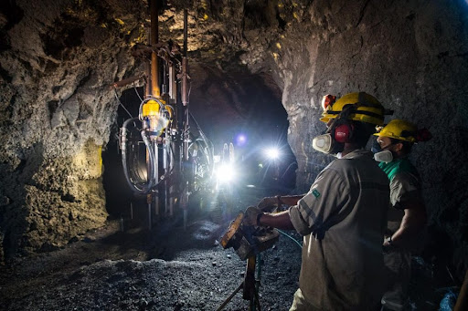

As Minas

O Brasil é um grande produtor mineral, rico em minérios como nióbio,
ferro, manganês e alumínio. A atividade mineradora no Brasil remonta ao período colonial, com a busca
pelo ouro no interior do país, e produziu grande impacto no desenvolvimento industrial
brasileiro.